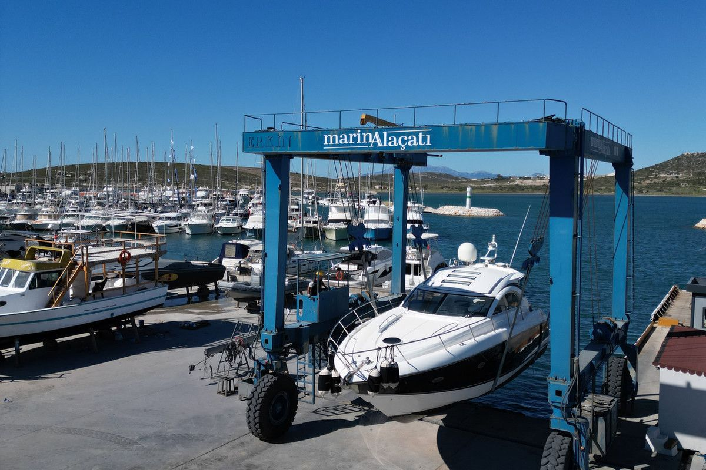
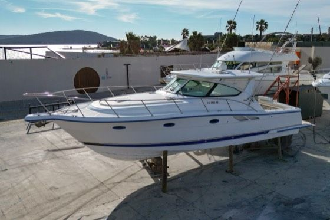
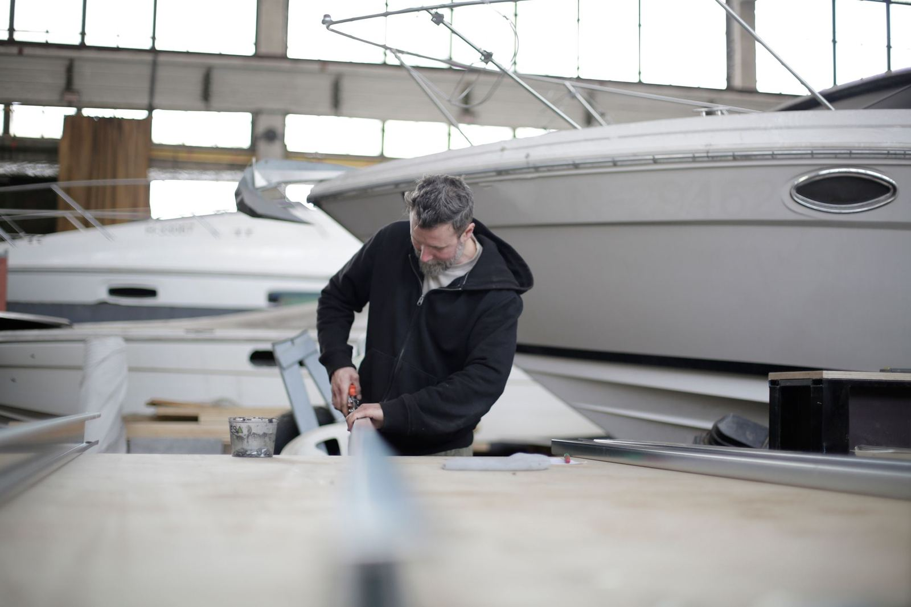
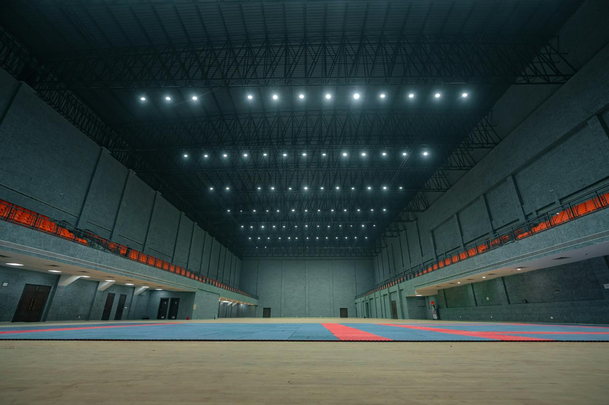
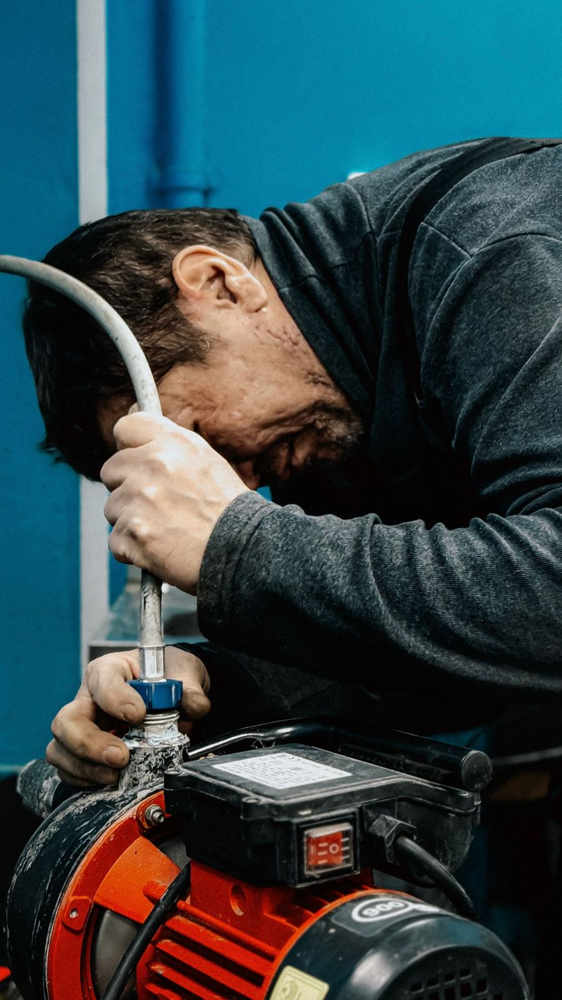
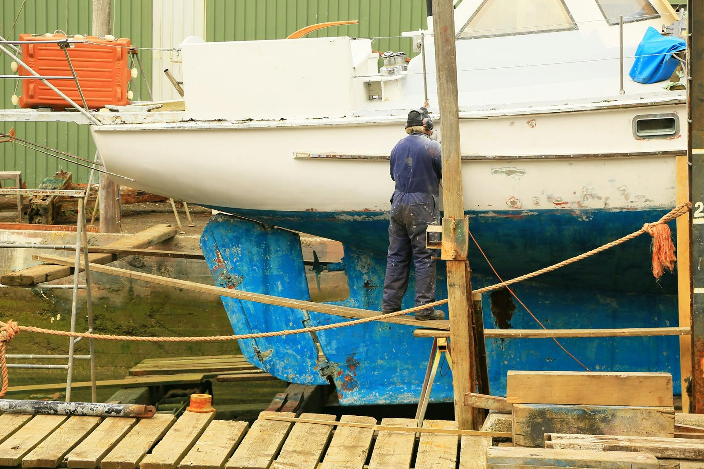
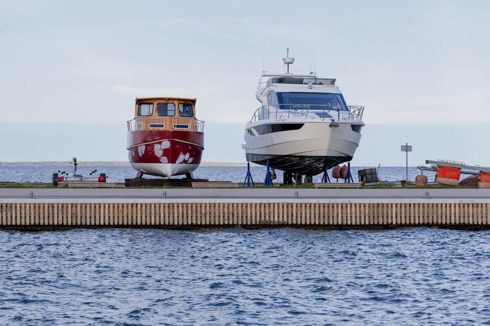
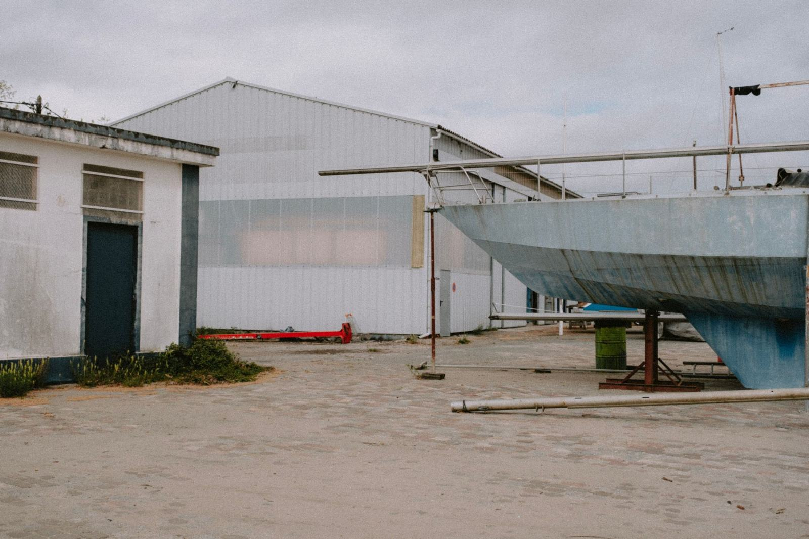

Denizden
Marinandan teslim alıyoruz. Anahtarı ver, gerisini düşünme.

Tuz, güneş ve nem tekneye en çok kışın zarar verir. Biz o ayları kapalı bir garajda, kontrollü ortamda, bakım takvimi işleyerek geçirtiyoruz. İlkbaharda teknen ilk günkü gibi denize iner.
Marinandan teslim alıyoruz. Anahtarı ver, gerisini düşünme.

marinAlaçatı travel lift ile kaldırıyor, römorkla garaja taşıyoruz.

Motor kışlama, karina raspası, onarım listesi. Her iş bakım kartına işlenir.

Kapalı, kameralı, nem kontrollü. Kendi yerinde, kış boyunca haftalık kontrol.

Polisaj, antifouling, suya indirme. Başladığı yere, ilk günkü gibi.
Kışlama sonunda basınçlı yıkama ve polisajla teslim. Tuz ve yosun izi kalmaz.
Denizden karaya, karadan denize; arada ne gerekiyorsa aynı ekip yapar.
Kameralı, nem kontrollü kapalı garajda kendi yerin, kendi bakım kartın.
Ayrıntı
Motor kışlama, elektrik, fiber ve jelkot onarımı; yetkili servis standardında.
Ayrıntı
Raspa, zehirli boya, anot değişimi. Sezona hazır alt yapı.
Ayrıntı
Marinadan garaja, garajdan denize. Kaldırma, taşıma, suya indirme.
Ayrıntı
Boat Clean ekibiyle yıkama, jelkot polisaj, teak ve iç detay.
Boat CleanTuz, güneş ve nem dışarıda kalır. Tekne kışı kontrollü ortamda geçirir.
Giriş kontrolü ve kayıt. Her yerin kendi bakım kartı var.
marinAlaçatı travel lift ile kaldırma, römorkla garaja taşıma.
Teknenle aynı ekip ilgilenir: denizden karaya, karadan denize.
Boat Clean ekibi yerine gelir: yıkama, polisaj, teak ve iç detay.
Tekne boyunu ve marinanı yaz; aynı gün fiyat ve teslim tarihiyle dönelim. Kış kapasitesi sınırlı.
+90 541 161 02 05